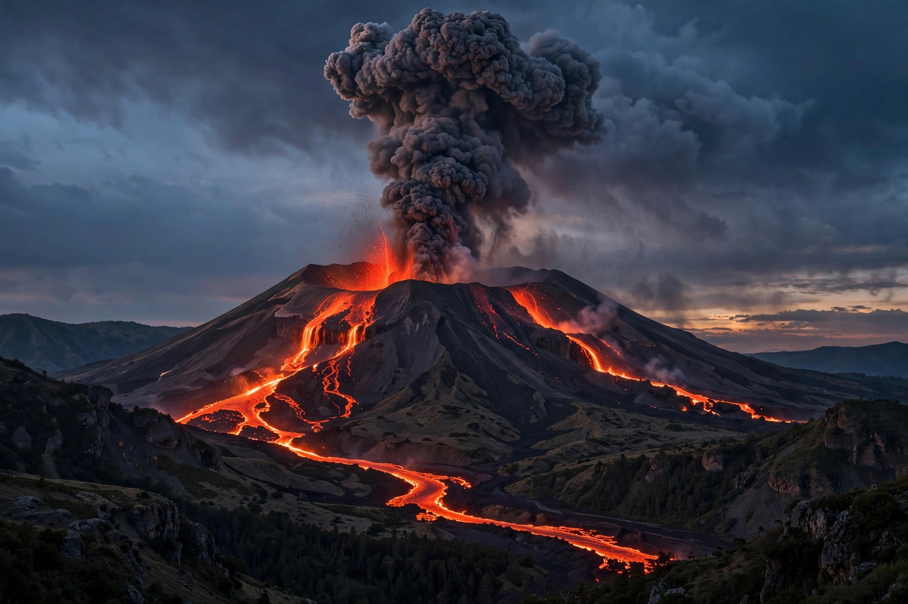

This is a set of lists of volcanic eruptions. Eruption size is commonly measured with the Volcanic Explosivity Index (VEI), a logarithmic scale from 0 to 8 based mainly on the volume of erupted material. The largest eruptions in recorded history include Tambora (1815), Krakatoa (1883) and Novarupta (1912); far larger eruptions are known from the geological record, including supervolcano eruptions such as those of Yellowstone and Toba.
| Volcano | Year | VEI | Region | Notes |
|---|---|---|---|---|
| Mount Tambora | 1815 | 7 | Indonesia | Largest observed eruption; caused the "Year Without a Summer" (1816) |
| Krakatoa | 1883 | 6 | Indonesia | Caldera-forming; tsunamis killed over 36,000 people |
| Novarupta | 1912 | 6 | Alaska, United States | Largest eruption of the 20th century by volume |
| Mount Pinatubo | 1991 | 6 | Philippines | Caused measurable global cooling for several years |
| Santa María | 1902 | 6 | Guatemala | One of three VEI-6 eruptions in 1902 era Central America |
| Mount St. Helens | 1980 | 5 | Washington, United States | Deadliest volcanic event in US history (57 deaths) |
| Mount Vesuvius | 79 AD | 5 | Italy | Destroyed Pompeii and Herculaneum |
| Mount Pelée | 1902 | 4 | Martinique | Pyroclastic surge destroyed Saint-Pierre, ~30,000 deaths |
| Eyjafjallajökull | 2010 | 4 | Iceland | Ash cloud closed much of European airspace |
| Hunga Tonga–Hunga Haʻapai | 2022 | ~5–6 | Tonga | Submarine eruption; pressure wave circled the globe |
| Volcano | Year | Approximate deaths |
|---|---|---|
| Mount Tambora, Indonesia | 1815 | 71,000+ |
| Krakatoa, Indonesia | 1883 | 36,000+ |
| Mount Pelée, Martinique | 1902 | 30,000 |
| Nevado del Ruiz, Colombia (lahar) | 1985 | 23,000–25,000 |
| Mount Unzen, Japan | 1792 | 15,000 |
| Mount Vesuvius, Italy | 79 AD | 13,000–16,000 (estimated) |